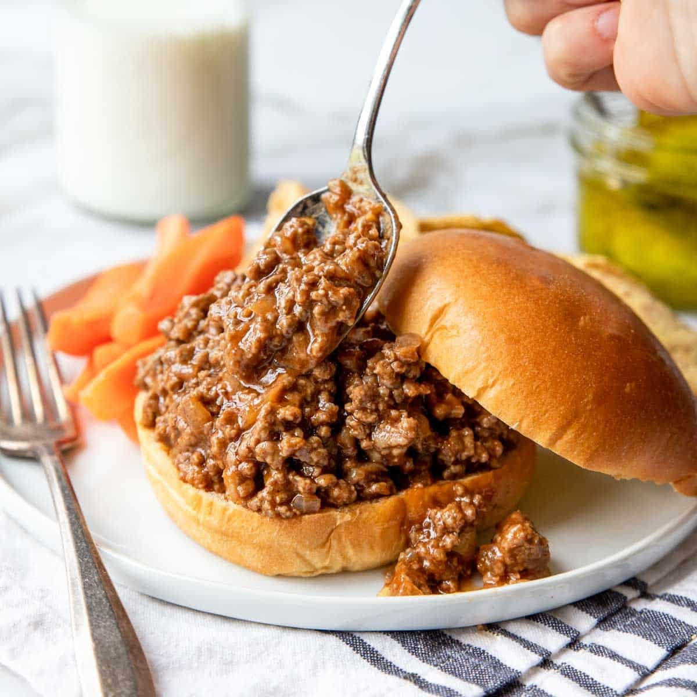
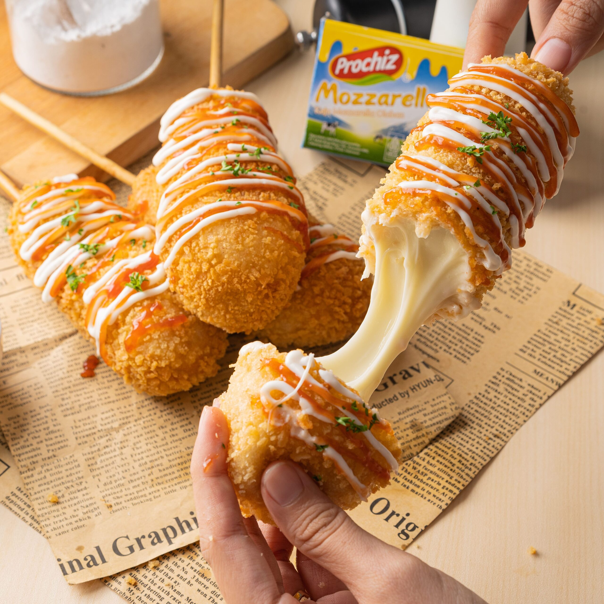

Nasi Ulam
Nasi Ulam refers to a rice salad which uses local herbs and vegetables as the main ingredients. While there is a variety of nasi ulam across Indonesia, Malaysia and Southern Thailand, Nasi Ulam Nyonya offers the typical peranakan flavours as its name suggests.
Nasi Lemak
Malaysian coconut milk rice, served with crispy anchovies, sambal, hard-boiled eggs, roasted peanuts, and cucumber. This is the best and most authentic nasi lemak recipe!
Laksa
Laksa is a popular street food in Malaysia, it’s a noodle dish that is quickly gaining popularity globally because of its scrumptious taste.
Nasi Ulam
Ingredients
- 1/3 cup dried shrimp
- 1/2 cup fresh or frozen shredded coconut
- 2 cups cooked rice, chilled
- 5-6 daun kadok, finely sliced ( wild betel leaves)
- 1/4 cup mint leaves, finely sliced
- 1/4 cup daun kesom, finely sliced (polygonum leaves, )
- 3 kaffir lime leaves, finely sliced
- 5 shallots, peeled and thinly sliced
- 1 lemongrass, white part only, thinly sliced
- 1 teaspoon salt
- 1 teaspoon sugar
- 3 dashes white pepper powder
- 3 dashes black pepper powder
Method
STEP 1:
Soak the dried shrimp in warm water until softened. Coarsely pound them using a mortar and pestle. Heat up a wok and dry toast the pounded shrimp until they are dry or smell aromatic. Do not burn the dried shrimp.
STEP 2:
Make the shredded coconut into kerisik by stir-frying them continuously in a wok, until they turn golden brown in color. Transfer to the mortar and pestle and pound until fine. Set aside.
STEP 3:
In a big bowl, combined the cooked rice and all the herbs, shallots, toasted coconut, and dried shrimp together. Add the salt, sugar, and peppers. Toss to combine well. Serve immediately.
Nasi Lemak
Ingredients
- vegetable oil, for frying
- 500g jasmine rice
- 175ml coconut milk
- 2 pandan leaves, or 2-3 drops of pandan essence
- 1 lemongrass stalk
- 50g shallots, peeled
- 10g candlenuts, pounded
- 25g dried chillies, soaked for 30 mins, deseeded and cut into chunks
- 25g fresh chillies, deseeded and cut into chunks
- 10g belachan (shrimp paste)
- 10g sliced galangal, or 1 tsp galangal paste
- 10g lemongrass, white part only, sliced
- 1/2 tbsp tamarind paste
- 70g raw unsalted peanuts
- 4 eggs
- 1 cucumber, thickly sliced
Method
STEP 1:
First, to prepare the rice, wash thoroughly in a sieve until the water runs clear. If you’re using a rice cooker, put all the ingredients for the coconut rice in along with 1 tsp salt, 1 tsp sugar and 350ml water. When the rice is ready, leave the lid on for 10 mins before opening, then fluff the rice with a fork. If you’re cooking rice on the hob, use a pan with a lid. Put all the ingredients for the rice in with 450ml water, 1 tsp salt and 1 tsp sugar on a high heat, bring to the boil, then cover. Simmer on a low heat for 10 mins, or until the liquid has evaporated. Let the rice sit with the lid on for another 10 mins. You should be able to see the individual rice grains. If the rice looks a bit wet, spread it out on a tray or into a colander to dry out before serving.
STEP 2:
To make the sambal, tip all the ingredients, except the tamarind paste, with a big pinch of salt in a food processor, then blitz to a paste. Stir-fry the sambal paste over a medium-high heat for 10-15 mins. The colour of the paste will darken and the oil will separate. Stir in the tamarind paste, and season to taste with salt and sugar. Leave to cool. Stir-fry the sambal paste over a medium-high heat for 10-15 mins. The colour of the paste will darken and the oil will separate. Stir in the tamarind paste, and season to taste with salt and sugar. Leave to cool.
STEP 3:
Heat enough oil in a pan to coat the base, then fry the peanuts until brown, and the dried anchovies until crisp. (You can also use roasted peanuts and skip frying them, if you like.) Remove the nuts and anchovies from the pan, then fry the eggs to your liking.Divide the rice between plates – you can simply spoon it on, or fill a small bowl with a portion, then turn it out onto each plate. Top with the anchovies, peanuts, sliced cucumber, fried eggs and sambal.
Laksa
Ingredients
- 3 tablespoons cooking oil
- 1/2 pack Malaysian instant curry paste
- 2 cups chicken broth
- 2 cups water
- 2 stalks lemongrass, white part only, pounded
- 10 tofu puffs, cut into pieces
- 1/2 cup evaporated milk
- 1/2 cup coconut milk
- salt to taste
- yellow noodles
- bean sprouts
- 3 hard-boiled eggs, cut into halves
- 10 shrimp, peeled, deveined and cooked
- fish cakes, cut into pieces
Method
STEP 1:
In a stockpot, add the oil and saute the instant curry paste until aromatic. Add the chicken broth, water, and lemongrass, and bring the soup to a boil. Lower the heat to a simmer. Add the tofu puffs, coconut milk, and evaporated milk. Add salt to taste. Keep the stock simmering.
STEP 2:
Rinse the yellow noodles and bean sprouts separately, then drain and set aside. To assemble a bowl of laksa for serving, bring some yellow noodles and a handful of bean sprouts to a boil. Drain the noodles and bean sprouts, and transfer them to a serving bowl.
STEP 3:
Top the noodles with 2-3 shrimp, a few pieces of fish cake, and some eggs. Using a ladle, pour the soup and add a few pieces of tofu puffs on top of the noodles. Serve immediately.

Sloopy Joe
Sloppy joes are a simple, American staple the whole family can get stuck into. Add a dash of spicy chipotle or smoky barbecue sauce to the minced beef filling for some zing.

Buffalo Chicken
These spicy wings are ideal party food for any celebration. The chicken is brined to make it extra juicy and the smoky sweetness of the sauce adds heat

Corndog
Make American-inspired corndogs by coating frankfurter sausages in a cornmeal batter, then deep-frying and serving with ketchup and yellow mustard
Sloopy Joe
Ingredients
- 1 tbsp vegetable oil
- 1 onion, finely chopped
- 2 small red peppers or yellow peppers, finely chopped
- 400g minced beef
- 2 x 400g cans chopped tomatoes
- 4tbsp Nando's PERi-BBQ sauce
- 4 cheese slices
- 6 burger buns
- crispy onions, to serve
- tbsp iceberg lettuce, to serve
Method
STEP 1:
Heat the oil in a deep frying pan, and tip in the mince, breaking it up with a wooden spoon as you go, until browned all over. Stir in the onion and pepper and cook for 8-10 mins until softened. Tip in the tomatoes and Nando's PERi-BBQ sauce, and season. Simmer for 20-25 mins until the sauce has thickened.
STEP 2:
Put the cheese slices on top of the mince and cover with a lid for 2 mins to let it melt into the sauce. Pile into the buns with the crispy onions, and lettuce on the side for scooping up the extra sauce.
Buffalo Chicken
Ingredients
- 1 1/2kg chicken thighs and drumsticks
- 180g sea salt flakes
- 90g soft dark brown sugar
- 2 tbsp chilli flakes
- 2 tbsp sweet smoked paprika
- 1 tbsp ground cumin
- 1 tbsp sea salt flakes
- 1 tbsp dark brown sugar
- 75g butter
- 125ml hot chilli sauce
- 1 tbsp maple syrup
Method
STEP 1:
Put the chicken in a big bowl. In a pan, heat 1 litre of water with the salt, brown sugar and chilli flakes. When it’s dissolved, add 2 litres of cold water and pour over the chicken. Put in the fridge and leave for at least 2 hrs, but ideally a day or two. When you’re ready to cook, take the chicken out of the water and pat dry all over with kitchen paper.
STEP 2:
Heat oven to 180C/160C fan/gas 4. Put the smoked paprika, ground cumin, sea salt and dark brown sugar on a baking tray. Mix them together, then roll the dried chicken pieces in the spices, making sure everything is covered. Roast the chicken for 1 hr or until crispy and caramelised.
STEP 3:
Meanwhile, for the sauce, gently melt the butter in a small pan with the hot sauce and maple syrup. When the chicken pieces come out of the oven, drizzle this sauce all over them and give them a shake. Serve with a side of creamed corn.
Corndog
Ingredients
- 100ml cornmeal
- 100g plain flour
- 1 egg, lightly beaten
- 1 tsp caster sugar
- 1/2 tsp fine sea salt
- 1 tbsp baking powder
- 150ml whole milk
- 8 frankfurters
- vegetable oil, for deep-frying
- ketchup and American mustard, to serve
Method
STEP 1:
Tip the cornmeal, flour, egg, caster sugar, salt, baking powder and milk into a bowl, and whisk until you have a smooth, lump-free batter. Carefully pour the batter into a tall jug or glass.
STEP 2:
Push a wooden skewer through the length of each frankfurter, so it goes about three-quarters of the way through. Fill a pan no more than a third full with oil and heat to 180C, or until a cube of bread dropped in browns within 30 seconds.
STEP 3:
Working with one frankfurter at a time, submerge it into the batter and gently turn to coat – it should be completely covered. Carefully drop into the oil and fry for 2-3 mins, or until the batter is crisp and golden. Drain on a sheet of kitchen paper. Repeat with the remaining frankfurters. Serve with ketchup and American mustard for dipping or drizzling over.
Okonomiyaki
Try this Japanese savoury pancake, made with cabbage and chunks of pork belly. Okonomiyaki pancakes are a great way to use up leftovers

Cheat's Ramen Noodle Soup
Use chicken, ramen noodles, spinach, sweetcorn and eggs to make this warming soup, ideal for when you crave something comforting yet light and wholesome.

Oyakadon
Tuck into this hearty Japanese oyakodon. It translates as ‘family donburi [rice bowl]' or ‘adult-and-kids donburi’, because both chicken and egg are used in the dish
Okonomiyaki
Ingredients
- 1 egg
- 60g plain flour
- 1 tsp vegetable bouillon powder
- 200g green cabbage, finely shredded
- 1 tbsp vegetable oil
- 100g cooked pork belly, thinly sliced into bite-sized pieces
- 1 1/2 tbsp Worcestershire sauce (For the sauce)
- 1 1/2 tbsp ketchup (For the sauce)
- 1/2 tbsp caster sugar (For the sauce)
- 2-4 tbsp mayonnaise (For the topping)
- 1 green nori (seaweed) sheet, shredded (For the topping)
- 3 spring onions, finely sliced （For the topping)
- katsuobushi (bonito flakes), to serve (optional for the topping)
Method
STEP 1:
Crack the egg into a large bowl and tip in the flour, bouillon powder and 100ml water. Mix well. Stir in the shredded cabbage and season well.
STEP 2:
Heat the oil in a small, deep frying pan or skillet (ours was around 19cm) over a medium heat and fry the pork belly slices for 4-5 mins until golden and the fat has rendered. Pour the cabbage mixture over, stir everything together and fry for 5 mins until dark brown underneath and semi-cooked. Flip and cook for 5 mins more.
STEP 3:
Meanwhile, make the sauce by whisking all the ingredients. Season lightly.
STEP 4:
When the okonomiyaki is cooked, transfer to a serving plate and top with the sauce, mayo, green nori, spring onions and katsuobushi, if using.
Cheat's Ramen Noodle Soup
Ingredients
- 700ml chicken stock
- 3 garlic cloves, halved
- 4 tbsp soy sauce, plus extra to season
- 1 tsp Worcestershire sauce
- thumb-sized piece of ginger, sliced
- 1/2 tsp Chinese five spice
- pinch of chilli powder
- 1 tsp white sugar (optional)
- 375g ramen noodles
- 400g sliced cooked pork or chicken breast
- 2 tsp sesame oil
- 100g baby spinach (For the garnish)
- 4 tbsp sweetcorn (For the garnish)
- 4 boiled eggs, peeled and halved (For the garnish)
- 1 sheet dried nori, finely shredded (For the garnish)
Method
STEP 1:
Mix 700ml chicken stock, 3 halved garlic cloves, 4 tbsp soy sauce, 1 tsp Worcestershire sauce, a sliced thumb-sized piece of ginger, ½ tsp Chinese five spice, pinch of chilli powder and 300ml water in a stockpot or large saucepan, bring to the boil, then reduce the heat and simmer for 5 mins.
STEP 2:
Taste the stock – add 1 tsp white sugar or a little more soy sauce to make it sweeter or saltier to your liking. Cook 375g ramen noodles following the pack instructions, then drain and set aside.
STEP 3:
Slice 400g cooked pork or chicken, fry in 2 tsp sesame oil until just starting to brown, then set aside. Divide the noodles between four bowls. Top each with a quarter of the meat, 25g spinach, 1 tbsp sweetcorn and two boiled egg halves each.
STEP 4:
Strain the stock into a clean pan, then bring to the boil once again. Divide the stock between the bowls, then sprinkle over 1 shredded nori sheet, sliced spring onions or shallots and a sprinkle of sesame seeds. Allow the spinach to wilt slightly before serving.
Oyakadon
Ingredients
- 250ml dashi
- 1 1/2 tbsp mirin
- 1 1/2 tbsp sake
- 1 1/2 tbsp soy sauce
- 1 1/2 tbsp caster sugar
- 2 boneless, skinless chicken thighs, finely sliced
- 1/2 onion, finely sliced
- 2 large eggs
Method
STEP 1:
Mix the dashi, mirin, sake, soy sauce and sugar together until the sugar dissolves. Put the chicken thighs and onion in a small pan, and pour over half the dashi broth so the chicken is just covered.
STEP 2:
Slowly bring the mixture to the boil, skimming off any fat or scum that floats to the surface, and cook for 8-10 mins until the chicken is cooked through and the liquid has reduced slightly. Taste the broth for seasoning, and adjust if needed. Crack the eggs into a bowl, beat well, and drizzle over the chicken in the pan. Cook over a medium heat until the egg has thickened slightly (it’s best served runny).
STEP 3:
Warm the remaining dashi broth in a separate pan. Serve the oyakodon over hot rice, with the extra dashi broth poured over. Season with mitsuba and togarashi or sansho pepper.
Purée De Châtaignes
Enjoy this rich and smooth chestnut purée alongside turkey or veal on Christmas Eve. In France, chestnuts are synonymous with the Christmas season
Tartiflette
A creamy and comforting oven bake of potatoes, cream and bacon – tartiflette is classic après-ski dish, originating from France's Haute-Savoie region.
Duck Confit
A classic, hugely popular recipe from France - one you can make time and time again and it just gets better
Purée de châtaignes
Ingredients
- 360g whole cooked vacuum-packed chestnuts
- 700ml whole milk
- 1-2 thyme sprigs
- 35g butter
- 2 shallots, sliced
- 1 tbsp crème fraîche
- ground white pepper, to taste
Method
STEP 1:
Tip the chestnuts into a saucepan with the milk and thyme. Bring to the boil over a medium heat, then reduce the heat to a gentle simmer and cook for 10-15 mins. The chestnuts are ready when they start to fall apart slightly when pricked with a fork.
STEP 2:
Meanwhile, heat the butter in a small pan and fry the shallots over a medium heat until softened.
STEP 3:
Remove the thyme from the chestnuts and discard. Use a slotted spoon to transfer the chestnuts to a food processor, then pour in 100ml of the poaching milk, reserving the rest. Add the fried shallots and crème fraîche, then blitz to a thick purée, adding more of the reserved poaching milk to loosen if needed. Season with salt and some white pepper to taste. To freeze, leave to cool fully, then seal in an airtight container and freeze for three weeks.
STEP 4:
Tip the purée back into the saucepan and cover to keep warm until you’re ready to serve. If the purée needs reheating, add a splash of the reserved poaching milk and warm through over a low heat.
Tartiflette
Ingredients
- 750g potato
- 1 onion
- 6rashers smoked back bacon
- 250g reblochon cheese or pont l’évêque cheese
- 142ml tub single cream
Method
STEP 1:
Preheat the oven to 220C/Gas 7/fan oven 200C. Peel and thickly slice the potatoes, then boil in salted water for 8-10 minutes, until just tender. Drain.
STEP 2:
Chop onion finely and fry in 25g/1oz butter and a drizzle of olive oil for 5 minutes. Snip bacon into pieces with scissors and add to the pan; stir well and cook for a further 5 minutes, until the onion and bacon are lightly coloured.
STEP 3:
Chop cheese into chunks, rind and all. Layer half the potatoes in a 1.5 litre/2¾ pint buttered ovenproof dish and scatter over half the onion, bacon and cheese. Lightly season with salt and pepper. Repeat layers, then pour cream evenly over the top and bake for 10-12 minutes until golden. Rest for 5 minutes and then serve with a salad.
Duck Confit
Ingredients
- Handful coarse sea salt
- 4 bay leaves, roughly torn
- 4 garlic cloves, roughly chopped
- Handful thyme sprigs, roughly torn
- 4 ducks legs
- 100ml white wine
Method
STEP 1:
The day before you want to make the dish, scatter half the salt, half the garlic and half of the herbs over the base of a small shallow dish. Lay the duck legs, skin-side up, on top, then scatter over the remaining salt, garlic and herbs. Cover the duck and refrigerate overnight. This can be done up to 2 days ahead. Pour the wine into a saucepan that will snugly fit the duck legs in a single layer. Brush the salt off the duck legs and place them, skin-side down, in the wine. Cover the pan with a lid and place over a medium heat. As soon as the wine starts to bubble, turn the heat down to the lowest setting and cook for 2 hours, checking occasionally that the liquid is just barely simmering. (If you own a heat diffuser, it would be good to use it here.) After 2 hours, the duck legs should be submerged in their own fat and the meat should feel incredibly tender when prodded. Leave to cool.
STEP 2:
duck legs are now cooked and can be eaten immediately – or you can follow the next step if you like them crisp. If you are preparing ahead, pack the duck legs tightly into a plastic container or jar and pour over the fat, but not the liquid at the bottom of the pan. Cover and leave in the fridge for up to a month, or freeze for up to 3 months. The liquid you are left with makes a tasty gravy, which can be chilled or frozen until needed.
STEP 3:
To reheat and crisp up the duck legs, heat oven to 220C/fan 200C/gas 7. Remove the legs from the fat and place them, skin-side down, in an ovenproof frying pan. Roast for 30-40 mins, turning halfway through, until brown and crisp. Serve with the reheated gravy, a crisp salad and some crisp golden ptoatoes.